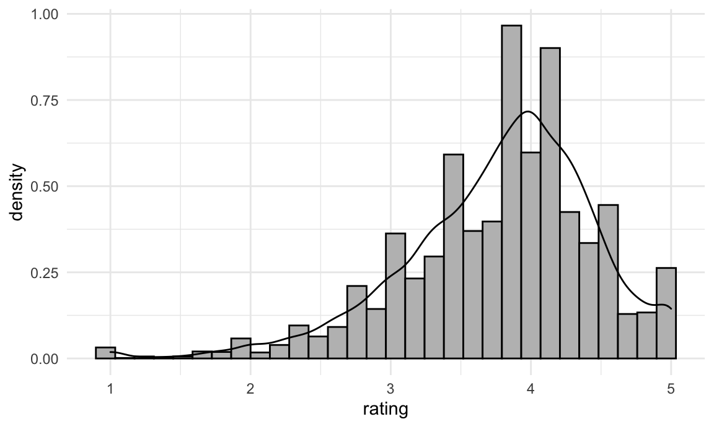
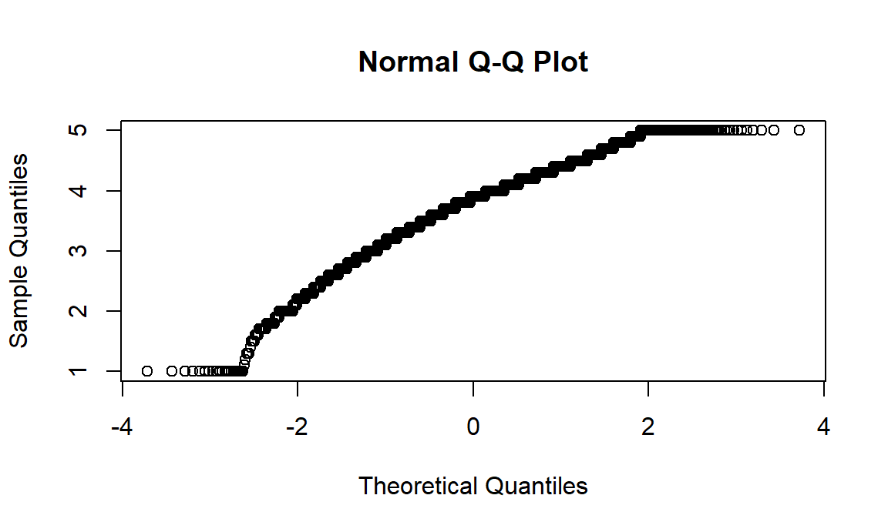
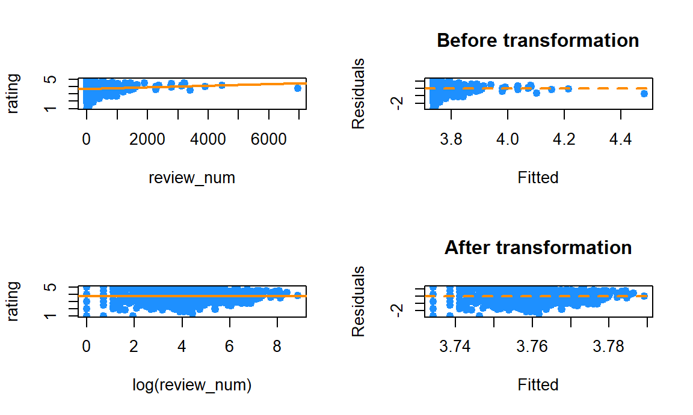
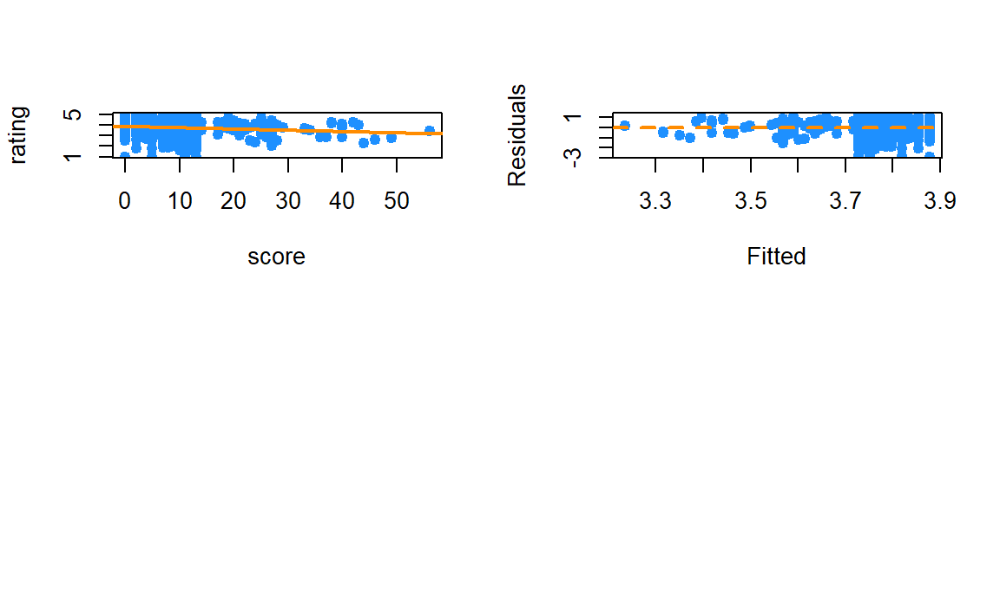
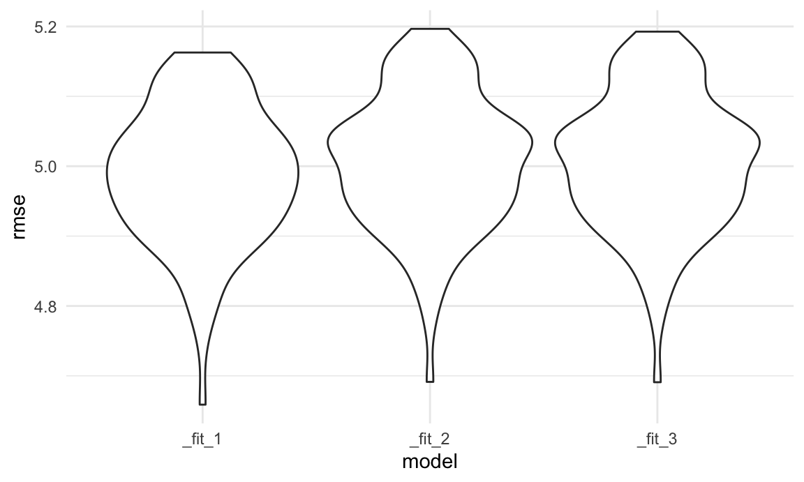
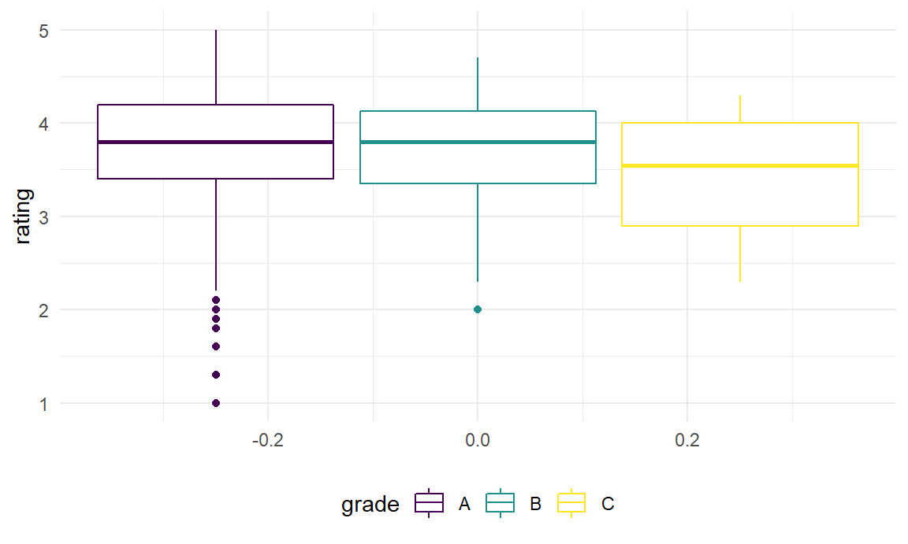
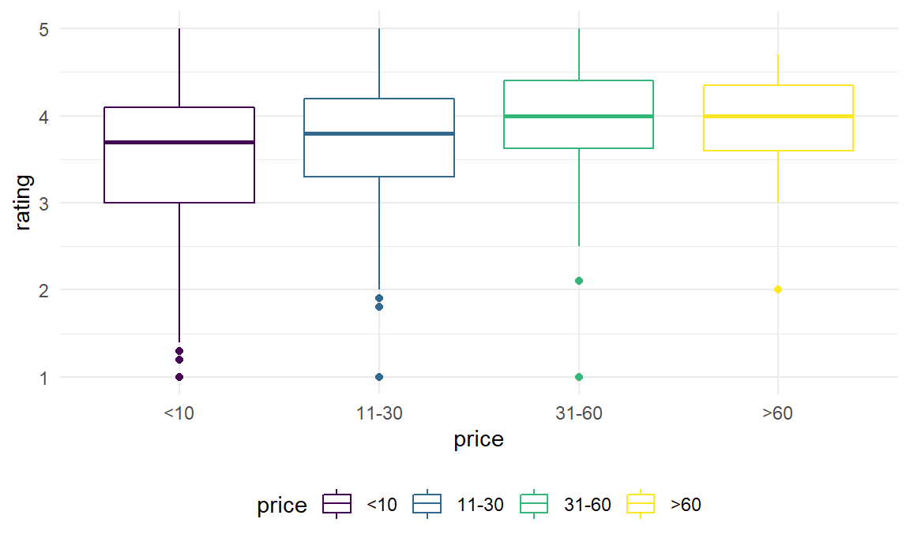
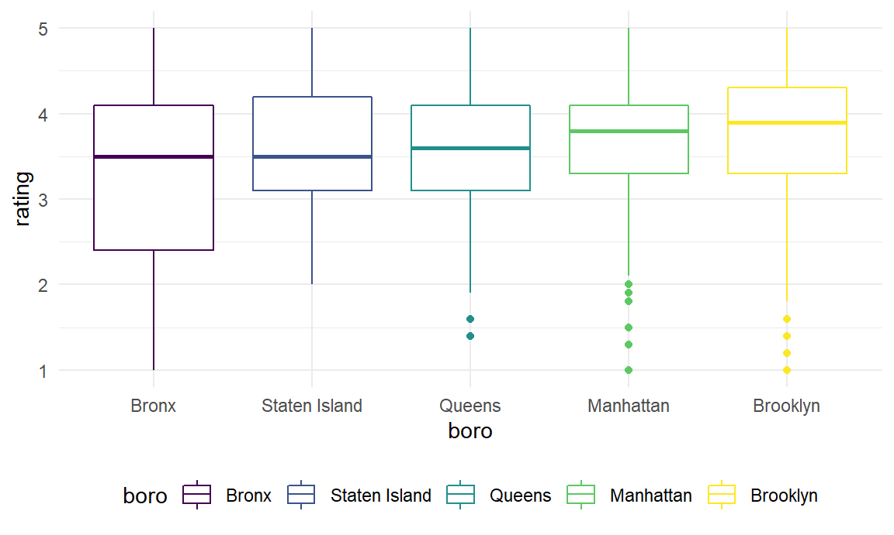
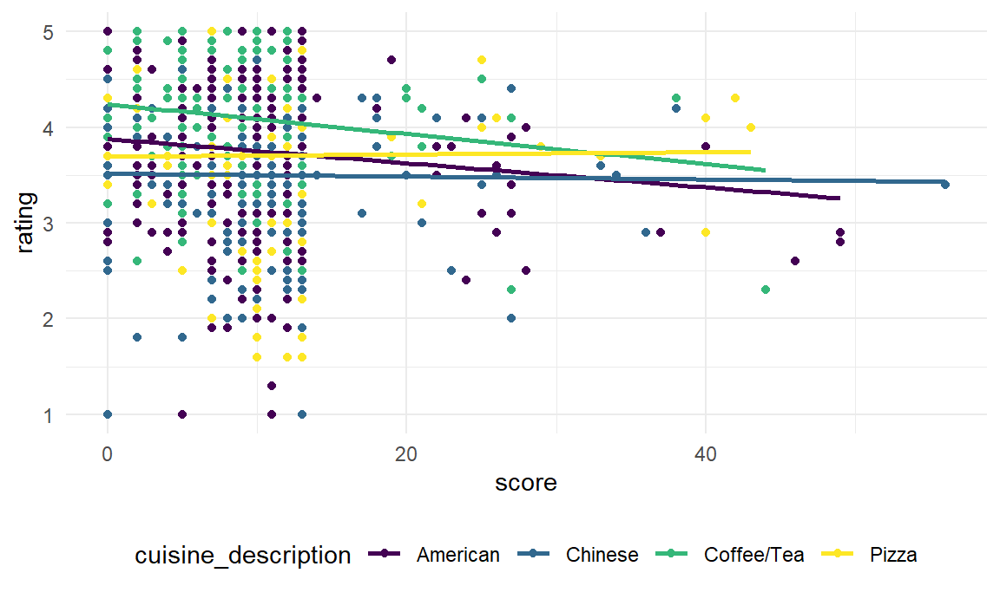
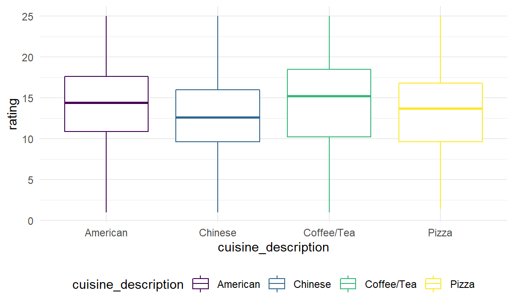

library(readr)
dt = read_csv("data/inspection_sub_all_date.csv")
df = read_csv("data/inspection_sub_latest_date.csv") %>%
distinct(camis, .keep_all = TRUE) %>%
mutate(price = fct_recode(price, "1" = "$", "2" = "$$", "3" = "$$$", "4" = "$$$$"),
boro = fct_reorder(boro, rating),
grade = fct_relevel(grade, "A"))df %>%
select(boro, grade, price) %>%
mutate(boro = fct_infreq(boro)) %>%
tbl_summary(
by = boro,
missing_text = "(Missing)",
statistic = list(
all_categorical() ~ "{n} ({p}%)"
)) %>%
bold_labels() %>%
italicize_levels() | Characteristic | Manhattan, N = 2,4221 | Brooklyn, N = 1,6711 | Queens, N = 1,3021 | Bronx, N = 4241 | Staten Island, N = 2341 |
|---|---|---|---|---|---|
| grade | |||||
| A | 1,280 (71%) | 913 (74%) | 666 (74%) | 194 (71%) | 148 (77%) |
| B | 41 (2.3%) | 39 (3.1%) | 29 (3.2%) | 6 (2.2%) | 4 (2.1%) |
| C | 16 (0.9%) | 8 (0.6%) | 12 (1.3%) | 8 (2.9%) | 0 (0%) |
| N | 225 (13%) | 126 (10%) | 109 (12%) | 37 (14%) | 27 (14%) |
| Z | 233 (13%) | 156 (13%) | 90 (9.9%) | 27 (9.9%) | 12 (6.3%) |
| (Missing) | 627 | 429 | 396 | 152 | 43 |
| price | |||||
| 1 | 653 (28%) | 668 (41%) | 542 (44%) | 209 (53%) | 92 (41%) |
| 2 | 1,420 (60%) | 856 (53%) | 655 (53%) | 171 (44%) | 123 (55%) |
| 3 | 240 (10%) | 76 (4.7%) | 34 (2.7%) | 9 (2.3%) | 8 (3.6%) |
| 4 | 49 (2.1%) | 10 (0.6%) | 9 (0.7%) | 2 (0.5%) | 2 (0.9%) |
| (Missing) | 60 | 61 | 62 | 33 | 9 |
| 1 n (%) | |||||
df %>%
select(score,rating, review_num) %>%
tbl_summary(
missing_text = "(Missing)",
statistic = list(
all_continuous() ~ "{mean} ({sd})"
)) %>%
bold_labels() %>%
italicize_levels() | Characteristic | N = 6,0531 |
|---|---|
| score | 17 (13) |
| (Missing) | 130 |
| rating | 3.62 (0.79) |
| review_num | 209 (459) |
| 1 Mean (SD) | |
We try to determine whether there is a relationship between boroughs and restaurants’ inspection grades. Our hypothesis is that there is no difference in the number of restaurants across the five grades across the five boroughs in NYC. We will perform the chi-square test to verify our assumption.
\(H0\): the expected number of restaurants in each grades are the same across all boroughs.
\(H1\): the expected number of restaurants in each grades are not same across all boroughs.
grade_boro =
df %>%
drop_na(grade) %>%
count(boro, grade) %>%
pivot_wider(
names_from = "grade",
values_from = "n") %>%
replace(is.na(.), 0)
grade_boro %>%
knitr::kable(caption = "Results Table",
col.names = c("Borough", "A", "B", "C", "N", "Z"))| Borough | A | B | C | N | Z |
|---|---|---|---|---|---|
| Bronx | 194 | 6 | 8 | 37 | 27 |
| Staten Island | 148 | 4 | 0 | 27 | 12 |
| Queens | 666 | 29 | 12 | 109 | 90 |
| Brooklyn | 913 | 39 | 8 | 126 | 156 |
| Manhattan | 1280 | 41 | 16 | 225 | 233 |
grade_boro = grade_boro %>%
data.matrix() %>%
subset(select = -c(boro))
chisq.test(grade_boro)##
## Pearson's Chi-squared test
##
## data: grade_boro
## X-squared = 36.127, df = 16, p-value = 0.002779Interpretation: The result of chi-square shows that p-value is less than 0.05, so we reject the null hypothesis at 95% significant level and conclude that the inspection grades of restaurants are significantly different by boroughs.
price_grade = df %>%
select(boro, score, grade, rating, review_num, price) %>%
drop_na(price, grade) %>%
group_by(price, grade) %>%
summarise(n = n()) %>%
pivot_wider(
names_from = grade,
values_from = n
) %>%
replace(is.na(.), 0) %>%
mutate(price = fct_recode(price, "<10"="1", "11-30"="2", "31-60"="3", ">60"="4"))
price_grade %>%
knitr::kable(caption = "Results Table",
col.names = c("Price($)", "A", "B", "C", "N", "Z"))| Price($) | A | B | C | N | Z |
|---|---|---|---|---|---|
| <10 | 1228 | 54 | 19 | 124 | 193 |
| 11-30 | 1623 | 57 | 23 | 307 | 284 |
| 31-60 | 194 | 3 | 1 | 54 | 23 |
| >60 | 44 | 0 | 0 | 9 | 1 |
price_grade = price_grade %>%
data.matrix() %>%
subset(select = -c(price))
chisq.test(price_grade)##
## Pearson's Chi-squared test
##
## data: price_grade
## X-squared = 65.421, df = 12, p-value = 2.278e-09Interpretation: The result of chi-square shows that p-value is less than 0.05, so we reject the null hypothesis at 95% significant level and conclude that the inspection grades of restaurants are significantly different by price scales of restaurants.
Now, we want to see whether receiving grade A is equally common among restaurants of all four price scales. To do this, we will conduct a proportion test.
total = df %>%
group_by(price) %>%
summarise(total = n())
n_a = df %>%
count(price, grade) %>%
filter(grade == "A")
join = left_join(total, n_a) %>% drop_na()
prop.test(join$n, join$total)##
## 4-sample test for equality of proportions without continuity correction
##
## data: join$n out of join$total
## X-squared = 23.36, df = 3, p-value = 3.397e-05
## alternative hypothesis: two.sided
## sample estimates:
## prop 1 prop 2 prop 3 prop 4
## 0.5674677 0.5032558 0.5286104 0.6111111#join = join %>%
# mutate(prop = n/total) %>%
# select(price, prop)From the test result, we can see that the p-value is greater than 0.05,
df %>%
select(boro, cuisine_description, score, grade, rating, review_num, price) %>%
ggplot(aes(x = rating))+
geom_histogram(aes(y = ..density..), bins = 30, color = "black", fill = "grey") +
geom_density()
qqnorm(df$rating)
Although the response variable rating is not normally
distributed, linear regression remains a statistically sound technique
since the sample size is large enough (i.e.>3000).
top_cuisine = df %>%
count(cuisine_description) %>%
arrange(-n) %>%
top_n(4) %>%
pull(cuisine_description)
reg_df = df %>%
select(boro, cuisine_description, score, grade, rating, review_num, price) %>%
filter(cuisine_description %in% top_cuisine) %>%
filter(grade %in% c("A", "B", "C"))
dlookr::find_skewness(reg_df)## [1] 3 5 6par(mfrow = c(2, 2))
plot(rating ~ review_num, data = reg_df, col = "dodgerblue", pch = 20, cex = 1.5)
review = lm(rating ~ review_num, data = reg_df)
abline(review, col = "darkorange", lwd = 2)
plot(fitted(review), resid(review), col = "dodgerblue",
pch = 20, cex = 1.5, xlab = "Fitted", ylab = "Residuals")
abline(h = 0, lty = 2, col = "darkorange", lwd = 2)
title(main = "Before transformation")
plot(rating ~ log(review_num), data = reg_df, col = "dodgerblue", pch = 20, cex = 1.5)
review = lm(rating ~ log(review_num), data = reg_df)
abline(review, col = "darkorange", lwd = 2)
plot(fitted(review), resid(review), col = "dodgerblue",
pch = 20, cex = 1.5, xlab = "Fitted", ylab = "Residuals")
abline(h = 0, lty = 2, col = "darkorange", lwd = 2)
title(main = "After transformation")
plot(rating ~ score, data = reg_df, col = "dodgerblue", pch = 20, cex = 1.5)
rating_score = lm(rating ~ score, data = reg_df)
abline(rating_score, col = "darkorange", lwd = 2)
plot(fitted(rating_score), resid(rating_score), col = "dodgerblue",
pch = 20, cex = 1.5, xlab = "Fitted", ylab = "Residuals")
abline(h = 0, lty = 2, col = "darkorange", lwd = 2)
Log transform review numbers:
reg_df = reg_df %>%
select(rating, everything()) %>%
mutate(review_num = log(review_num))Rating has some association with cuisine type, inspection grade and price scale.
reg_df %>%
ggplot(aes(y = rating, x = cuisine_description, color = cuisine_description))+
geom_boxplot()
reg_df %>%
ggplot(aes(y = rating, x= grade, color = grade))+
geom_boxplot()
reg_df %>%
drop_na(price) %>%
mutate(price = fct_recode(price, "<10"="1", "11-30"="2", "31-60"="3", ">60"="4")) %>%
ggplot(aes(y = rating, x = price, color = price))+
geom_boxplot()
reg_df %>%
mutate(boro = fct_reorder(boro, rating)) %>%
ggplot(aes(y = rating, x = boro, color = boro))+
geom_boxplot()
There is interaction between score and cuisine type:
reg_df %>%
ggplot(aes(x = score, y = rating, color = cuisine_description))+
geom_point()+
geom_smooth(method="lm", se=F, aes(group = cuisine_description, color = cuisine_description))
Score has little influence on rating. Parallel lines indicate that borough is not a confounder.
reg_df %>%
ggplot(aes(x = score, y = rating, color = boro))+
geom_point()+
geom_smooth(method="lm", se=F, aes(group = boro, color = boro))
model = lm(rating ~ cuisine_description*score+boro+review_num+price, data = reg_df)
summary(model)##
## Call:
## lm(formula = rating ~ cuisine_description * score + boro + review_num +
## price, data = reg_df)
##
## Residuals:
## Min 1Q Median 3Q Max
## -2.8327 -0.4447 0.0802 0.5036 1.6914
##
## Coefficients:
## Estimate Std. Error t value Pr(>|t|)
## (Intercept) 3.238716 0.124746 25.962 < 2e-16 ***
## cuisine_descriptionChinese -0.179756 0.115510 -1.556 0.11990
## cuisine_descriptionCoffee/Tea 0.115594 0.103312 1.119 0.26339
## cuisine_descriptionPizza -0.211880 0.128355 -1.651 0.09903 .
## score -0.005979 0.005818 -1.028 0.30429
## boroStaten Island 0.237826 0.131738 1.805 0.07126 .
## boroQueens 0.260726 0.102750 2.537 0.01128 *
## boroBrooklyn 0.435706 0.098791 4.410 1.12e-05 ***
## boroManhattan 0.299366 0.099385 3.012 0.00264 **
## review_num 0.013804 0.013816 0.999 0.31790
## price2 0.150177 0.045558 3.296 0.00101 **
## price3 0.324539 0.099172 3.272 0.00109 **
## price4 0.291255 0.196017 1.486 0.13755
## cuisine_descriptionChinese:score 0.005813 0.009369 0.620 0.53508
## cuisine_descriptionCoffee/Tea:score -0.003744 0.009505 -0.394 0.69372
## cuisine_descriptionPizza:score 0.017067 0.010254 1.665 0.09625 .
## ---
## Signif. codes: 0 '***' 0.001 '**' 0.01 '*' 0.05 '.' 0.1 ' ' 1
##
## Residual standard error: 0.7359 on 1317 degrees of freedom
## (53 observations deleted due to missingness)
## Multiple R-squared: 0.05485, Adjusted R-squared: 0.04409
## F-statistic: 5.095 on 15 and 1317 DF, p-value: 6.518e-1010-fold cross validation:
library(caret)
set.seed(1)
train = trainControl(method = "cv", number = 10)
model = train(rating ~ cuisine_description*score+boro+review_num+price,
data = reg_df,
trControl = train,
method = 'lm',
na.action = na.pass)
model$finalModel##
## Call:
## lm(formula = .outcome ~ ., data = dat)
##
## Coefficients:
## (Intercept) cuisine_descriptionChinese
## 3.238716 -0.179756
## `cuisine_descriptionCoffee/Tea` cuisine_descriptionPizza
## 0.115594 -0.211880
## score `boroStaten Island`
## -0.005979 0.237826
## boroQueens boroBrooklyn
## 0.260726 0.435706
## boroManhattan review_num
## 0.299366 0.013804
## price2 price3
## 0.150177 0.324539
## price4 `cuisine_descriptionChinese:score`
## 0.291255 0.005813
## `cuisine_descriptionCoffee/Tea:score` `cuisine_descriptionPizza:score`
## -0.003744 0.017067print(model)## Linear Regression
##
## 1386 samples
## 5 predictor
##
## No pre-processing
## Resampling: Cross-Validated (10 fold)
## Summary of sample sizes: 1248, 1249, 1246, 1248, 1249, 1247, ...
## Resampling results:
##
## RMSE Rsquared MAE
## 0.7404936 0.03838339 0.5845776
##
## Tuning parameter 'intercept' was held constant at a value of TRUEElastic Net
library(glmnet)
library(caret)
set.seed(2)
cv_10 = trainControl(method = "cv", number = 10)
x = model.matrix(~ ., dplyr::select(reg_df, -rating))[,-1]
y = reg_df$rating
elnet_int = train(
rating ~ . ^ 2, data = reg_df %>% drop_na(),
method = "glmnet",
trControl = cv_10,
tuneLength = 10
)
get_best_result = function(caret_fit) {
best = which(rownames(caret_fit$results) == rownames(caret_fit$bestTune))
best_result = caret_fit$results[best, ]
rownames(best_result) = NULL
best_result
}
get_best_result(elnet_int)## alpha lambda RMSE Rsquared MAE RMSESD RsquaredSD
## 1 0.5 0.01293484 0.7339794 0.05763406 0.5795953 0.02780232 0.04084439
## MAESD
## 1 0.02175662